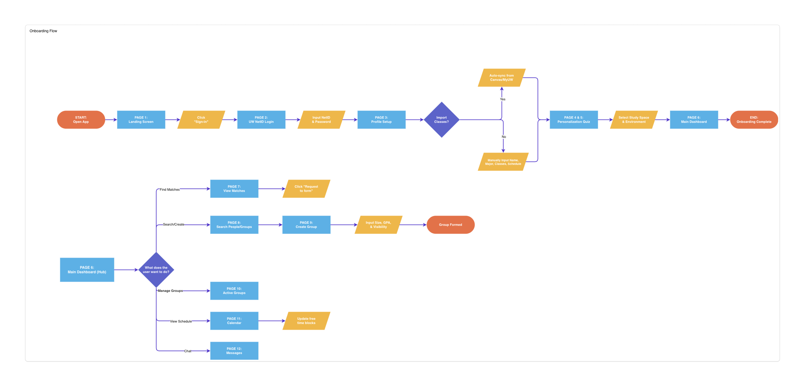
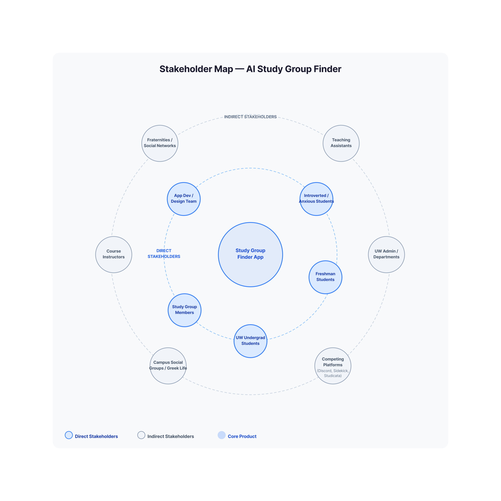

StudyHub
An AI-powered academic matching platform that makes collaborative learning accessible to every UW student, regardless of social confidence or existing network.

Core Concept
StudyHub addresses the accessibility gap in collaborative learning through a web-based platform that removes the social and technical barriers preventing students from forming effective study groups. The solution works in three phases:
- Build trust: personality and learning style onboarding survey, privacy controls, and verified profiles so students feel safe before committing.
- Surface matches: compatible matches by course with plain-language reasoning so students understand why they were paired.
- Support follow-through: shared goal setting, in-app scheduling, a collaborative group board, and streak tracking so groups don't just form but actually stick.
Unlike existing tools that rely on proximity, existing friendships, or unmoderated group chats, StudyHub focuses on trust-first matching, personality-aware pairing, introvert-centered design, transparent AI explanations, social proof adoption, and structured first-session facilitation.
How Users Interact
Students create an account with UW NetID credentials, complete a personality test and schedule setup, review AI-suggested matches with plain-language reasoning, accept or decline matches, schedule a first session, set shared group goals, and collaborate on a group board, all before their first in-person meeting.

Personas & Stakeholders
Maya Chen · Direct user
Freshman · Computer Science · Age 18
Maya moved to Seattle from out of state and doesn't know anyone in her classes. She's introverted and finds it hard to approach strangers in large lecture halls. She defaults to studying alone even when she'd prefer a group.
Needs: Low-stakes entry, visible profiles before committing, transparent match reasoning, reputation signals.
Dr. David Pak · Indirect stakeholder
Lecturer · UW College of Engineering
David teaches a 200-person intro engineering course. He notices students struggle to collaborate, reflected in project quality and drop rates. He doesn't have bandwidth to facilitate study group formation himself.
Relationship: Benefits when students perform better and could be an institutional advocate if outcomes are demonstrable.

Key Features
Must have
Onboarding survey
Guided flow collecting class enrollment, learning type, personality (Big Five), availability, and club involvement, inspired by Co-Learn's detailed preference pattern.

Personality + course matching
AI matching system using Big Five personality data alongside course enrollment for class-wise and general study groups, with plain-language reasoning for every recommendation.

Privacy controls & accessibility
Students control what profile information is visible. Accessibility accommodations are built into the core experience, not treated as an afterthought.

Should have
- Class roster integration
- In-app scheduling linked to calendar apps
- Group goal setting before first meetings
- Verified badges for trust signals
Nice to have
- Group streaks based on consistency
- Infinite group board (FigJam-style) for shared notes and brainstorming

Interface mockups
Design Process
From low-fidelity sketches to high-fidelity prototypes.
Low-fi prototype 1
Low-fi prototype 2
Low-fi prototype 3
Annotated mockups
Key screens call out design decisions tied to research: prominent personality test entry (post-usability testing), match reasoning cards, privacy controls, and scheduler guidance prompts.
Storyboard

How It Addresses the Problem
StudyHub directly targets the students our research identified as most underserved: first-years without networks, introverted and socially anxious students, and commuters who can't rely on proximity. By matching on schedule, personality, and learning style before any awkward outreach, providing transparent reasoning to combat algorithm skepticism, and structuring the first session to reduce social risk, the platform addresses the behavioral gap that tools like Discord and GroupMe leave open. Every design decision is made with the most vulnerable student in mind, because students aren't failing to find study groups because they lack tools; they're failing because the social risk feels too high.